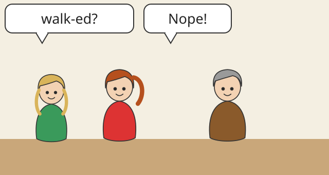

Wie -s und -ed klingen
Mit einem KI-Tutor lernen
Ein KI-Tutor erklärt dir diese Seite und hilft dir bei den Aufgaben. Wähl deinen Assistenten:
Mit Claude öffnen Mit ChatGPT öffnen Mit Mistral Vibe öffnen
Du nutzt dein eigenes Konto beim Anbieter. Der Assistent ist kein Angebot von lernapps.net: lernapps liefert nur Inhalte und Aufgaben. Die Wahl gilt für alle Seiten, nur auf diesem Gerät.
Sophie liest in zwei Teilen

Von links: Sophie (Zöpfe) liest ein Wort in zwei Teilen, Ellie (roter Pferdeschwanz) schüttelt den Kopf, rechts steht Mr Hill (graue Haare).
Quelle: eigene Zeichnung. Lizenz: CC-BY-4.0.Sophie liest das Wort walked („ging zu Fuß“) laut vor, genau wie es geschrieben steht: „walk-ed“. Ellie schüttelt den Kopf.
Aufgabe
Lösung
Wie ein t, ohne eigene Silbe. richtige Antwort
Das Wort hat nur eine Silbe, und man hört am Ende ein t.
Wie eine eigene Silbe „ed“.
So liest Sophie das Wort. Dann hätte walked zwei Silben, aber man spricht nur eine.
Wie ein d, ohne eigene Silbe.
Nach dem k klingt die Endung wie t. Ein d summt, und nach k summt es nicht.
Man schreibt -ed, aber man spricht nach k ein t. Der letzte Laut des Wortes entscheidet.
Mehr dazu: Lernlandkarte Englisch · Aussprache von -s und -ed
Das kannst du danach: Du weißt, wie -s und -ed klingen, und kannst sie üben.
Der letzte Laut entscheidet
Man schreibt immer -s oder -ed, aber man spricht es verschieden. Es kommt auf den letzten Laut des Wortes an, nicht auf den letzten Buchstaben. Summt der Laut, summt auch die Endung.

Gleiche Endung, anderer Laut: In cats klingt -s wie /s/, in bags wie /z/.
Quelle: eigene Zeichnung. Lizenz: CC-BY-4.0.| Letzter Laut | Endung | Beispiel |
|---|---|---|
| stimmlos | -s wie /s/, -ed wie /t/ | cats, walked |
| stimmhaft | -s wie /z/, -ed wie /d/ | bags, played |
| Zischlaut (s, z, sh, ch, j, x) | -s wie /ɪz/ | buses |
| t oder d | -ed wie /ɪd/ | wanted |
Merke
- Stimmlos (summt nicht): -s klingt /s/, -ed klingt /t/.
- Stimmhaft (summt): -s klingt /z/, -ed klingt /d/.
- Eigene Silbe: Bei -s nach einem Zischlaut (s, z, sh, ch, j, x) klingt es /ɪz/. Bei -ed nach t oder d klingt es /ɪd/.
- Auch m, n, l und Vokale summen: pens klingt /z/, plays klingt /z/, stayed klingt /d/.
Aufgabe
Höre vier Sätze und sprich sie nach. In jedem steckt ein Wort aus der Tabelle: cats, walked, played, wanted.
Tipp
Die Aufnahme ist eine KI-Stimme und spricht manchmal unscharf. Frag im Zweifel deine Lehrkraft.
- Ellie has two cats and a dog today.KI
- The children walked to school together.KI
- Amir played football with Peter yesterday.KI
- Peter needed some help yesterday.KI
Zum Aufnehmen braucht diese Aufgabe JavaScript. Die Beispiele kannst du auch ohne anhören.
Lösung
- Ellie has two cats and a dog today.
- The children walked to school together.
- Amir played football with Peter yesterday.
- Peter needed some help yesterday.
Übung
Aufgabe
Lösung
Wie /z/. richtige Antwort
Das n summt. Darum summt auch die Endung, und man spricht /z/.
Wie /s/.
/s/ klingt nach stimmlosen Lauten wie p, t oder k. Das n summt aber.
Wie /ɪz/.
/ɪz/ kommt nur nach Zischlauten. Nach n kommt keine eigene Silbe.
Das n summt, darum klingt -s wie /z/.
Mehr dazu: Lernlandkarte Englisch · Aussprache von -s und -ed
Aufgabe
Lösung
waited richtige Antwort
Nach t kommt eine eigene Silbe, man spricht /ɪd/.
needed richtige Antwort
Nach d kommt eine eigene Silbe, man spricht /ɪd/.
jumped
Nach p klingt -ed wie /t/. Es gibt keine eigene Silbe.
opened
Nach n klingt -ed wie /d/. Es gibt keine eigene Silbe.
Nur nach t und d wird -ed als eigene Silbe /ɪd/ gesprochen.
Mehr dazu: Lernlandkarte Englisch · Aussprache von -s und -ed
Aufgabe
Lösung
Richtige Antwort: looks – /s/; beds – /z/; boxes – /ɪz/; visited – /ɪd/
Looks endet auf k, das nicht summt. Beds endet auf d, das summt. Box endet auf einen Zischlaut, und visit endet auf t.
Mehr dazu: Lernlandkarte Englisch · Aussprache von -s und -ed
Aufgabe
Höre zu und schreibe jeden Satz ganz auf.
Tipp
Der Satz sagt dir, wann etwas passiert.
- KI
- KI
- KI
Lösung
- Peter cleaned his room yesterday.
- Mrs Parker opens the window every morning.
- Amir painted a picture yesterday.
Sprich nach
Aufgabe
Höre den Satz und nimm dich auf. Höre dich an und bewerte dich selbst. Die App hört nicht zu.
Tipp
Achte auf die Endung.
- Sophie waited for the bus yesterday.KI
- Peter plays with two dogs in the garden.KI
- Amir jumped over the boxes yesterday.KI
Zum Aufnehmen braucht diese Aufgabe JavaScript. Die Beispiele kannst du auch ohne anhören.
Lösung
- Sophie waited for the bus yesterday.
- Peter plays with two dogs in the garden.
- Amir jumped over the boxes yesterday.
Wie es weitergeht
Peter will die Wörter mit Endungen an die Wand schreiben, aber manchmal ändert sich dabei das Wort. Mr Hill sagt: „Das schauen wir uns in der Werkstatt an.“